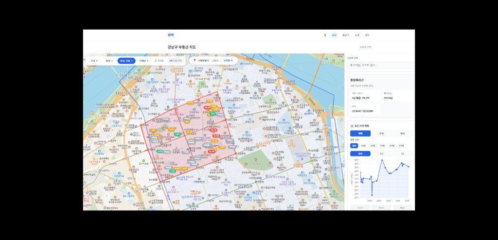

비전공자 직장인이 강남구 부동산 지도 만든 후기
호갱노노 따라잡기 1편
"이거 호갱노노 아니야?" — 지인들에게 보여줬을 때 가장 많이 들은 말입니다. 코딩 한 줄 못 하는 생산관리 직장인이 AI와 함께 강남구 5년치 부동산 지도를 만들었습니다. 매매·전세·월세 합쳐 14만 9천 건, 단지 741개. 오늘은 그 과정을 솔직하게 공유합니다.
왜 만들었나요?
사실 처음 시작은 단순한 호기심이었어요.
"강남구에 아파트가 도대체 몇 개나 있을까?"
부동산 공부를 한 지 1년 정도 됐는데, 늘 호갱노노나 아실 같은 앱을 보면서 — "이 데이터들이 다 어디서 오는 걸까?" 가 궁금했습니다.
알아보니 국토교통부에서 실거래가 정보를 무료 API로 제공하고 있더라고요. "어? 그럼 나도 만들 수 있는 거 아냐?" 라는 생각이 들었고, 그렇게 시작했습니다.
처음에는 그냥 카카오맵에 마커 하나 띄우는 거였어요. 강남구 아파트 몇 개나 있는지 점으로 표시해보자.
그런데 막상 데이터를 받아보니 — 강남구 한 구에만 단지가 741개였습니다. 거기에 5년치 매매 거래만 17,784건. 전월세까지 합치면 15만 건에 가까웠습니다.
"이거 그냥 띄우면 끝이 아니구나..."
이게 시작이었습니다.
호갱노노가 왜 그렇게 만들었는지 알게 됐습니다
부동산 앱 한번 써보신 분들은 아실 거예요. 호갱노노, 아실, 직방 — 다 비슷한 UI를 가지고 있죠.
- 가격대별로 마커 색상이 다름 (싸면 초록, 비싸면 빨강)
- 줌 인 하면 단지명이 나옴
- 줌 아웃 하면 점으로 변함
- 옆에 필터 바 (가격/평형/연식)
- 지역 선택 드롭다운
처음엔 "왜 다 비슷하게 만들지?" 싶었어요. 그런데 — 직접 만들어보니 그렇게 안 만들면 안 되더라고요.
741개 단지를 그냥 다 띄우면 화면이 폭발합니다. 빨간 핀이 다닥다닥 붙어서 어디가 어딘지 구분이 안 돼요. 그래서:
- 가격대별 색상으로 한눈에 분포를 파악하고
- 줌 레벨에 따라 정보 양을 조절해서 (멀리서 점, 가까이서 가격, 더 가까이서 단지명)
- 필터로 걸러내서 원하는 단지만 보고
이 모든 게 — 부동산 지도의 표준이 된 데에는 다 이유가 있었던 거예요.
진짜 어려웠던 것 1: 데이터 적재
국토교통부 실거래가 API는 무료지만 — 한 번에 한 달치, 한 지역만 가져올 수 있습니다.
강남구 5년치를 가져오려면:
- 78개월 × 매매 = 78회 호출
- 78개월 × 전세 = 78회 호출
- 78개월 × 월세 = 78회 호출
- 총 234회 API 호출
이걸 손으로 하나하나 하면 하루 종일 걸립니다. 그래서 자동화 스크립트를 만들었는데 — 처음엔 전월세 API가 자꾸 403 에러를 뱉어서 한참 헤맸어요.
원인은 황당하게도 — 공공데이터포털에서 전월세 API를 별도로 신청해야 한다는 걸 몰랐던 것. 매매 API 키랑 같은 줄 알았는데, API마다 따로 신청해야 했습니다.
💡 이거 알아내는데만 1시간 걸렸어요 😅
진짜 어려웠던 것 2: 좌표 변환
거래 데이터에는 단지명과 주소만 있습니다. 지도에 마커를 띄우려면 위도/경도가 필요한데요.
741개 단지의 주소를 하나하나 좌표로 변환해야 했습니다. 카카오 지도 API를 이용해서 자동 변환 스크립트를 만들었는데 — 741개 중 99%가 변환 성공했습니다.
나머지 1%는? 주소 표기가 미묘하게 다르거나, 재개발로 사라진 단지들이었어요. 이런 건 손으로 일일이 처리해야 했죠.
진짜 어려웠던 것 3: 성능
마커 741개를 다 띄우니까 — 페이지 로딩이 5초가 넘었습니다. 줌만 변경해도 1~2초 멈춤. 이건 못 쓰는 수준이죠.
해결책은 뷰포트 컬링(Viewport Culling) 이라는 기법이었습니다. 화면에 보이는 마커만 그리고, 화면 밖은 그리지 않는 거예요. 이걸 적용하니까:
- Before: 페이지 로드 5초, 줌 변경 1~2초
- After: 페이지 로드 1초, 마커 렌더링 35ms
같은 데이터, 같은 단지 수인데 — 코드 한 번 갈아엎으니까 50배가 빨라졌습니다.
이런 거 보면서 깨달았어요. "개발자들이 코드 리팩토링, 리팩토링 하는 데 다 이유가 있구나"
호갱노노 따라잡기: 완성된 기능들
📊 데이터
- 강남구 매매 5년치 17,784건
- 전세 5년치 70,611건
- 월세 5년치 61,161건
- 단지 741개 (좌표 99% 확보)
🎨 UI/UX
- 가격대별 색상 마커 (10억 미만 초록, 10~20억 노랑, 20억+ 빨강)
- 줌 레벨별 마커 디자인 (점 → 가격 → 단지명)
- 매매/전세/월세 토글
- 평형별 가격 변화 그래프 (5년치 꺾은선)
- 가격/평형/연식/거래량 필터
- 서울 > 강남구 > 동 선택 드롭다운
- 강남구 + 동 경계 폴리곤 표시
말로 설명해도 감이 안 오실 것 같아서 — 실제 화면 한 장 보여드릴게요.

위 화면에서 한꺼번에 보이는 정보를 정리하면:
- 상단 필터 바: 가격/평형/연식/거래량으로 단지 필터링
- 지역 선택: 서울특별시 > 강남구 > 논현동 (빨간 경계로 표시)
- 강남구 전체 경계: 파란 선으로 표시
- 마커: 가격대별 색상 + 평균 가격 표시
- 사이드바: 동양파라곤 정보 + 5년 가격 변화 그래프 + 평형별 탭
이 모든 게 — 코드 한 줄 못 쓰는 직장인이 하루 만에 만든 결과물입니다.
사람들이 가장 놀란 부분
지인들에게 보여줬을 때 가장 놀라는 부분은 — "이걸 하루 만에 만들었다고?" 였습니다.
비결은 솔직히 두 가지입니다:
1. AI 도구 (Cursor + Claude)
제가 코드를 한 줄도 못 쓰지만, AI한테 "이런 거 만들어줘" 하면 만들어줍니다. 진짜 그게 다예요. 단, AI가 만들어준 걸 이해하고 수정 요청하는 건 제 몫이에요. 그래야 "이게 왜 안 되지?" 를 AI한테 정확하게 물어볼 수 있거든요.
2. 포기하지 않기
중간에 진짜 100번은 막혔습니다.
- 전월세 API 403 에러 (1시간 헤맴)
- 마커가 사라지는 버그 (30분 헤맴)
- 드롭다운이 엉뚱한 곳에 뜨는 문제 (15분 헤맴)
- 화면이 깨지는 현상 (40분 헤맴)
- 캐시 때문에 변경이 적용 안 되는 거 (20분 헤맴)
한 번에 다 되는 건 없습니다. 그냥 계속 부딪히는 거예요. AI가 다 해줄 거라고 기대하면 실망합니다. AI는 도구일 뿐이고, 결국 만드는 사람은 형이에요.
진짜 솔직한 후기
좋은 점
- "내가 만들었다" 는 성취감이 어마어마함
- 부동산 공부에 진짜 도움됨 (데이터를 직접 봐서)
- 콘텐츠 소재가 무한대로 생김 (이 블로그 글처럼)
아쉬운 점
- 아직 강남구만 됨 (전국 확장 필요)
- 매일 새 거래 데이터가 자동으로 안 들어옴 (자동화 필요)
- 디자인은 호갱노노 대비 아직 부족함 (천천히 개선 중)
그리고 한 가지 더 — 이거 만들면서 직장 일 외에 "두 번째 무언가"가 생겼다는 느낌이 들었어요. 퇴근하고 뭐 만들지 고민하는 게 재밌어요. 월급 외에 또 다른 가능성을 보고 있는 기분?
직접 사용해보세요
만든 도구는 무료로 공개되어 있습니다.
강남구 부동산 지도 바로가기
지도 열기 →지금은 강남구만 되지만, 다음 주에는 서울 25개 구 전체로 확장할 예정입니다.
써보시고 불편한 점이나 추가됐으면 하는 기능이 있다면 문의 페이지로 알려주세요. 진짜 다 듣고 반영합니다!
다음 편 예고
이게 끝이 아닙니다. 다음 편에서는:
- 자동화 — 매일 새벽 3시에 새 거래 데이터가 자동으로 들어오게 만들기
- 서울 25구 확장 — 한 구가 아니라 서울 전체로
- 그래프 고도화 — 매매 vs 전세 갭 비교, 평형별 비교 등
- 모바일 최적화 — 출퇴근길에 보기 좋게
부동산 + AI + 사이드 프로젝트에 관심 있는 분들, 다음 글에서 만나요!
마지막으로
혹시 이 글을 읽고 — "나도 만들어보고 싶다" 생각이 드신다면.
진짜 그냥 시작해보세요. 저보다 코딩 더 못해도 됩니다. AI랑 같이 하면 됩니다. 막히면 검색하면 됩니다. 안 되면 다시 하면 됩니다.
1년 전의 저는 — HTML이 뭔지도 몰랐어요. 지금은 부동산 지도를 만듭니다. 인생은 진짜 어떻게 될지 모르는 거예요.
여러분의 첫 사이드 프로젝트, 응원합니다! 💪